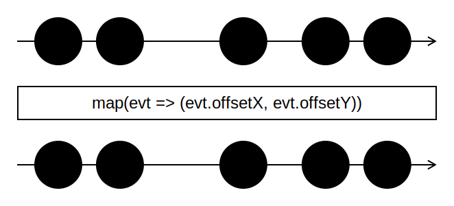

Introducción a la programación reactiva con RxJS
Programación Declarativa Aplicada
Máster en Ingeniería Informática
Facultad de Informática
Universidad Complutense de Madrid
Máster en Ingeniería Informática
Facultad de Informática
Universidad Complutense de Madrid
Ejemplo
Comenzamos con la siguiente página HTML:
index.html
<!DOCTYPE html>
<html>
<head>
<title>Captura de eventos</title>
<link rel="stylesheet" href="index.css"/>
</head>
<body>
<div id="areaClicks"></div>
<script src="main.js"></script>
</body>
</html>
index.css
#areaClicks {
width: 600px;
height: 300px;
background-color: lightblue;
}
Ejemplo
- Ya en JavaScript, obtenemos una referencia al elemento DOM correspondiente al área sombreada
<div>de la página:const area = document.getElementById('areaClicks');
Detección de pulsaciones
- Construimos un observable a partir de las pulsaciones de ratón realizadas sobre el área sombreada:
import { fromEvent } from 'rxjs'; const area = document.getElementById('areaClicks'); const click$ = fromEvent(area, 'click');
- Por convenio, los nombres de las variables que contienen observables finalizan en
$.
El método fromEvent
fromEvent(e, type)
Construye un observable a partir de los eventos de tipotypeque se producen en el elementoede la página.- Cada elemento del observable creado es un objeto de la interfaz
Eventde JavaScript.
Suscripción a un observable
- Mediante el método
subscribe()de los observables, podemos indicar las acciones a realizar cada vez que se produce un evento enclick$:click$.subscribe((click) => console.log('Click! ', click)); - La función pasada a
subscribe()recibe el objetoMouseEventcorrespondiente a cada pulsación.
Operadores RxJS
- Permiten transformar un observable en otro.
- Son operaciones puras: generan un nuevo observable sin alterar el original
- Para aplicar una secuencia de operadores a un observable se utiliza el método
pipe():const destino$ = origen$.pipe( operacion1(), operacion2(), ... )
Operadores RxJS

El operador map
- Produce un observable aplicando una función a cada elemento del observable original.

Ejemplo
- Obtenemos un observable con las coordenadas cada pulsación del ratón:
import { fromEvent, map } from 'rxjs'; ... const click$ = fromEvent(area, 'click').pipe( map(evt => ({x: evt.offsetX, y: evt.offsetY})) ); click$.subscribe(({x, y}) => console.log(`Click en (${x},${y})`));
Ejemplo
El operador filter
- Produce un observable a partir de los eventos de otro, para los que la función booleana pasada como parámetro devuelve true.
Ejemplo
- Supongamos que solo queremos informar de las pulsaciones de ratón que se producen en la mitad izquierda del área sombreada:
import { fromEvent, map, filter } from 'rxjs'; ... const click$ = fromEvent(area, 'click').pipe( map(evt => ({x: evt.offsetX, y: evt.offsetY})), filter(({x, y}) => x < area.clientWidth / 2) ); click$.subscribe(({x, y}) => console.log(`Click en (${x},${y})`));
El operador take
- Aplicado a un número
n, produce un observable con losnprimeros valores del observable inicial.

Ejemplo
- Continuando con el ejemplo anterior, nos quedamos solamente con las diez primeras pulsaciones del ratón.
import { fromEvent, map, filter, take } from 'rxjs';
...
const click$ = fromEvent(area, 'click').pipe(
map(evt => ({x: evt.offsetX, y: evt.offsetY})),
filter(({x, y}) => x < area.clientWidth / 2),
take(10)
);
click$.subscribe(({x, y}) => console.log(`Click en (${x},${y})`));
El operador reduce
- Similar a la función
reducede JavaScript. - Mantiene un acumulador que se actualiza a medida que el observable origen produce valores.
- Cuando el observable origen finaliza, se emite el valor final del acumulador.

El operador scan
- Similar a
reduce, pero el observable resultante emite los valores intermedios del acumulador.